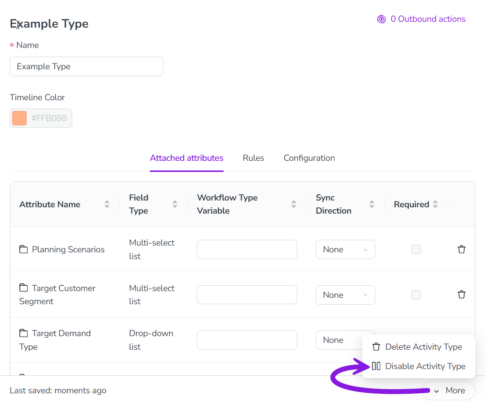

If you no longer need an activity type, you have two options: you can either disable or delete the unneeded activity type. Here's what each option does, and when you should use each one:
Disable an activity type: When you disable an activity type, you can no longer create activities of that type. However, all previously created activities of the type remain. We recommend using this option in most cases when you no longer need an activity type, as it retains data for reporting purposes.
Delete an activity type group: Deleting an activity type will permanently remove it from your Uptempo instance. You can only delete an activity type if there are no more activities of the type, or any rules that involve the type. This means that, to delete an activity type, you must first delete all activities within it, and all rules related to the group. As a result, we recommend using this option only in cases where you no longer need any of the data associated with these activities. Otherwise, you should use the option to disable the activity type instead.
Disable an activity type
In the Activities section, click Settings:
In the Activity Configuration menu, click Activities > Types & Groups.
In the list panel on the left, click on the activity type you want to disable. The selected activity type's settings are shown in the settings panel on the right.
In the settings panel, click More > Disable Activity Type: 
The change is saved automatically, and takes effect immediately.
The activity type is disabled, and is displayed in the list panel with "(disabled)" after its name.
To re-enable a disabled activity type, follow the same steps, then select More > Enable Activity Group in step 4.
Delete an activity type
In the Activities section, click Settings.
In the Activity Configuration menu, click Activities > Types & Groups.
In the list panel on the left, click on the activity type you want to delete. The selected activity type's settings are shown in the settings panel on the right.
In the settings panel, click More > Delete Activity Type:
The change is saved automatically, and takes effect immediately.
The activity type is deleted, and is removed from the list panel.
 Settings:
Settings: